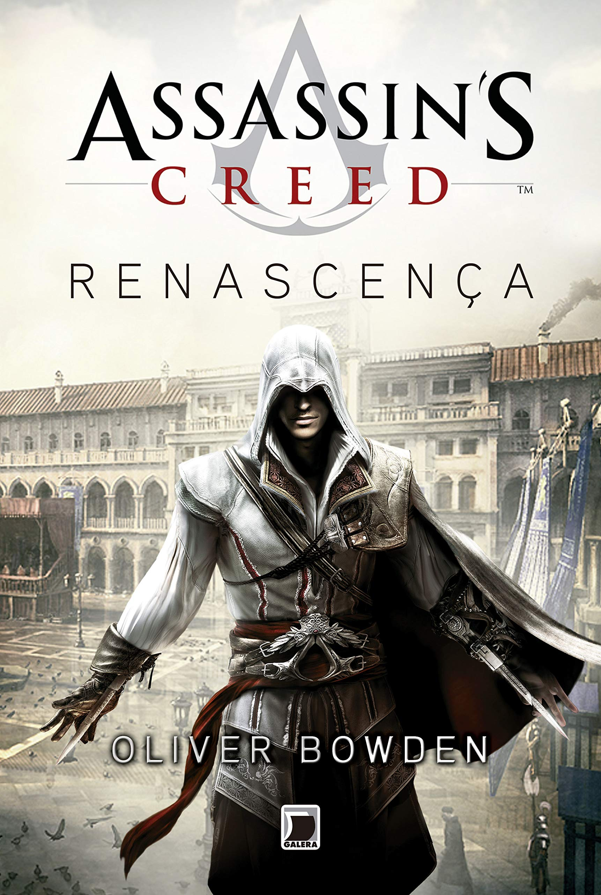
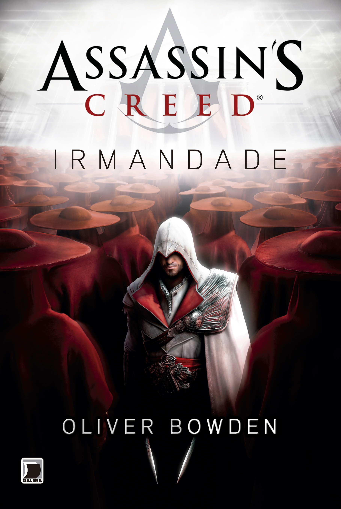
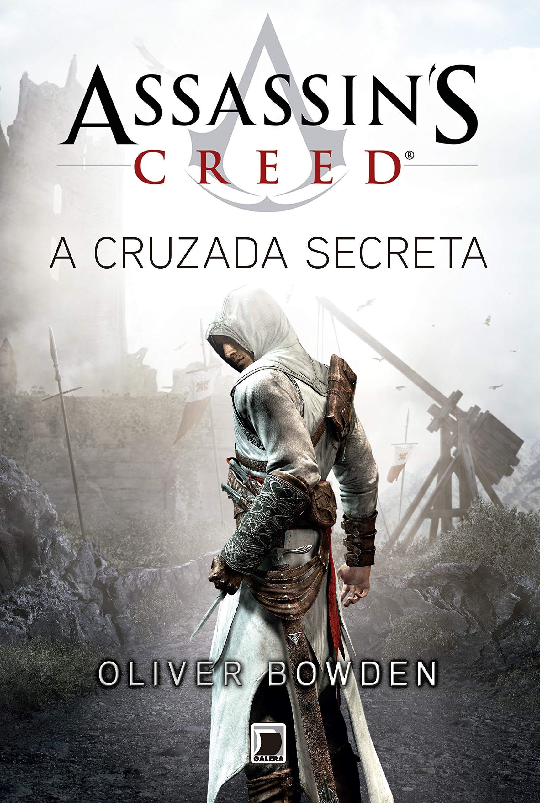
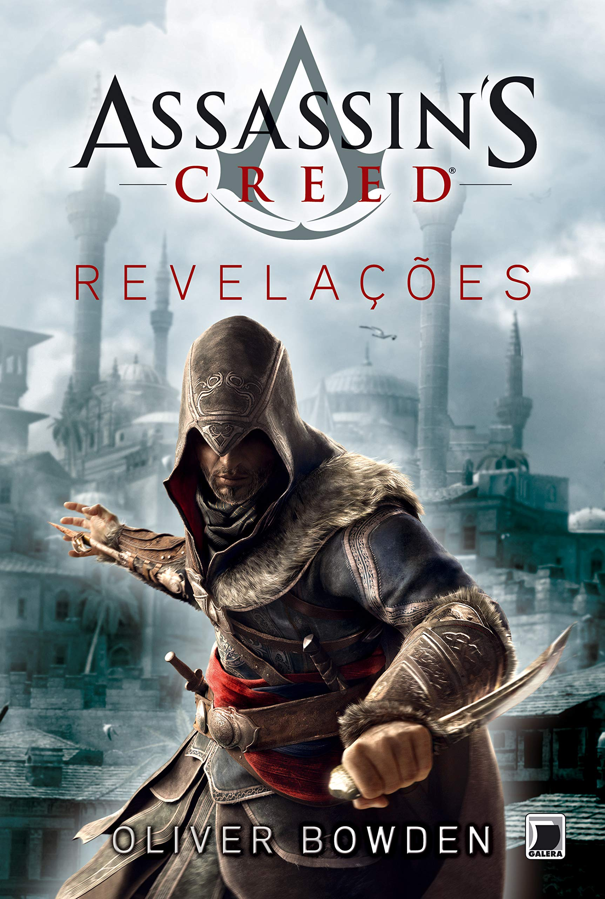
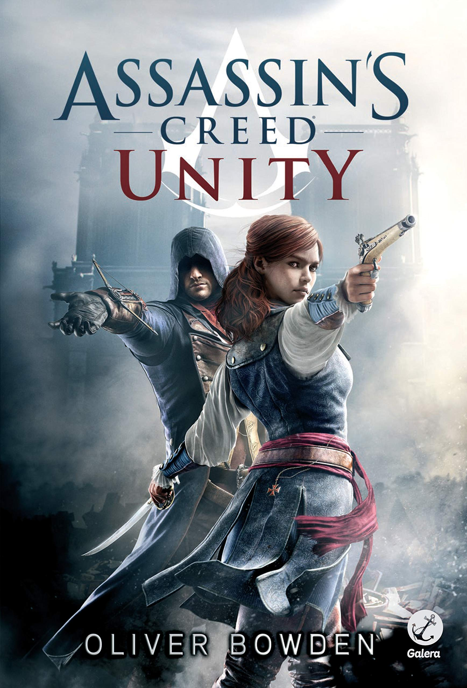
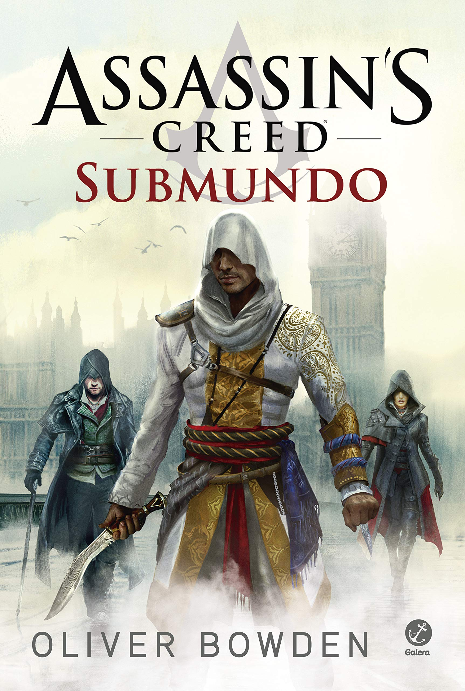

Assassin’S Creed
RENASCENÇA

Nome original: Assassin’S Creed – Renaissance
Ano de lançamento: 2011 (BR)/ 2009 (USA)
Número de páginas: 378
Primeiro adaptação dos games para o romance, Assassin’s Creed Renascença conta a história do assassino Ezio Auditore, de sua juventude até a transformação e descoberta sobre o passado de seu pai e seu clã. Os acontecimentos são bem fieis ao jogo Assassin’s Creed II, que se passa na Itália renascentista, como o nome aponta.
Assassin’S Creed
IRMANDADE

Nome original: Assassin’s Creed – Brotherhood
Ano de lançamento 2012 (BR)/ 2010 (USA)
Número de páginas: 392
O segundo volume de Assassin’s Creed mostra a reconstrução da Irmandade dos Assassinos, sob as ações e direcionamentos de Ezio Auditore. Homônimo ao jogo, Assassin’s Creed Brotherhood, o livro mostra a ascensão da família Bórgia na Itália, e a luta da irmandade dos Assassinos para reconstruir uma Itália “destruída”.
Assassin’S Creed
A CRUZADA SECRETA

Nome original: Assassin’s Creed – The Secret Crusade
Ano de lançamento 2012 (BR)/ 2011 (USA)
Número de páginas: 336
Assassin’s Creed A cruzada secreta conta a história de Altair Ibn-La’Ahad sob o ponto de vista de Niccolo Polo, o pai do famoso mercador e explorador italiano da idade média. O livro foca na história do assassino do primeiro jogo. Sinceramente, acho que “A cruzada secreta” foi lançado somente para o livro seguinte, “Revelações”, ter o que revelar de Altair, sem que ele fosse um “Assassino” completamente novo nos romances da franquia.
Assassin’S Creed
REVELAÇÕES

Nome original: Assassin’s Creed – Revelations
Ano de lançamento 2013 (BR)/ 2011 (USA)
Número de páginas: 392
Finalizando a o arco de romances de Assassin’s Creed, o quarto livro da série corresponde ao jogo homônimo, Revelations, que tem como principal enredo o conjunto de revelações que interliga Ezio Auditore, agora mais velho e experiente, ao grande Altair e o destino da irmandade dos Assassinos. A visita de Ezio à Constantinopla traz novamente os ares do livro anterior, com a rivalidade de Templários e Assassinos como pano de fundo.
Assassin’S Creed
RENEGADO

Nome original: Assassin’s Creed – Forsaken
Ano de lançamento 2012 (BR)/ 2012 (USA)
Número de páginas: 350
O livro de número cinco de Assassin’s Creed corresponde ao jogo de número III. A confusão não é tão grande, já que acompanha o lançamento dos jogos. No entanto, a semelhança para por aí, pois, enquanto o jogo Assassin’s Creed III conta a história do Assassino Ratonhnhaké:ton (Connor), o livro, Assassin’s Creed Renegado mostra a história do pai dele, Haytham Kenway.
Assassin’S Creed
Bandeira negrA

Nome original: Assassin’s Creed – Black Flag
Ano de lançamento 2013 (BR)/ 2013 (USA)
Número de páginas: 336
Desta vez mas alinhado com os jogos da franquia, Assassin’s Creed Bandeira Negra também acompanha o jogo homônimo e amplia a história da família Kenway, apresentada no último volume, “Renegado”. O Assassino desta vez é o pirata Edward Kenway, navegando entre os mares na época da Era Dourada da Pirataria. Edward é pai de Haytham e, por sua vez, avô de Connor.
Assassin’S Creed
UnitY

Nome original: Assassin’s Creed – Unity
Ano de lançamento: 2014 (BR)/ 2014 (USA)
Número de páginas: 364
Assassin’s Creed Unity apresenta o novo assassino Arno Dorian, na época da revolução francesa, em plena Paris. Arno começa a sua jornada pela vida de membro da irmandade dos Assassinos, após descobrir que seu padrasto era na verdade um importante membro da ordem dos Templários. Além de toda a agitação da sua nova vida como Assassino, Arno tem que enfrentar toda a revolução acontecendo no seu país.
Assassin’S Creed
Submundo

Nome original: Assassin’s Creed – Underworld
Ano de lançamento: 2015 (BR e USA)
Número de páginas: 364
Assassin’s Creed Submundo é o equivalente ao jogo Assassin’s Creed Syndicate, lançado também em 2015. Ambos os títulos se passam na Inglaterra da era Vitoriana, mais exatamente, em 1862. Neste livro, o foco da história é ninguém menos que Henry Green, o Assassino de Londres que direciona os irmãos Jacob e Evie Frye no jogo. No livro, ficamos sabendo mais sobre o passado do personagem (que, na verdade, se chama Jayadeep Mir, filho de Arbaaz Mir, personagem principal dos quadrinhos Assassin’s Creed Brahman e estrelando o jogo Assassin’s Creed Chronicles India).
Ordem de leitura
Ordem Cronológica
- A cruzada secreta (1191)
- Renascença (1476)
- Irmandade (entre 1480 e 1490)
- Revelações (por volta de 1500)
- Bandeira Negra (entre 1715 e 1718)
- Renegado (entre 1770 e 1780)
- Unity (1789)
- Submundo (1862)
Ordem de Lançamento
- Renascença (lançado em 2009)
- Irmandade (lançado em 2010)
- A cruzada secreta (lançado em 2011)
- Revelações (lançado em 2012)
- Renegado (lançado em 2012)
- Bandeira negra (lançado em 2013)
- Unity (lançado em 2014)
- Submundo (lançado em 2015)